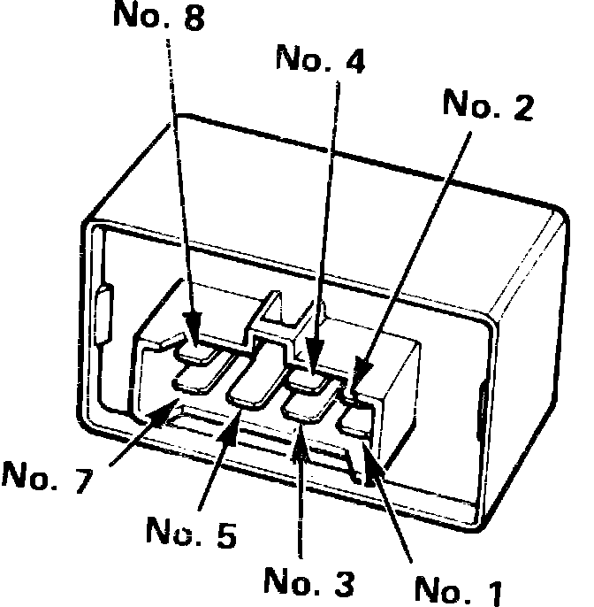

Main Relay (Computer/Fuel System): Testing and Inspection
Fig. 65 Main Relay Terminal Identification:

Relay Test
1. Remove main relay.
2. Connect battery positive terminal to terminal No. 4 and battery negative terminal to terminal No. 8 of the main relay, Fig. 33. If continuity exists between terminals 5 and 7, proceed to step 3. If no continuity is present, replace main relay.
3. Connect battery positive terminal to terminal No. 5 and battery negative terminal to terminal No. 2 of the main relay, Fig. 33. If continuity is present between No. 1 and No. 3 terminal of the main relay, proceed to step 4. If no continuity is present between No. 1 and No. 3 terminal of main relay, replace main relay.
4. Connect battery positive terminal to terminal No. 3 and battery negative terminal to terminal No. 8 of the main relay, Fig. 33. If continuity is present between terminal No. 5 and No. 7 terminal of the main relay, proceed to step 5. If no continuity is present between No. 5 and No. 7 terminal of main relay, replace main relay.
5. If continuity is present in previous step, main relay is satisfactory. If fuel pump still does not operate, proceed to Harness Test.
Harness Test
1. Place ignition switch in the off position, then disconnect main relay electrical connector.
2. Check continuity between black wire terminal in connector and ground. If circuit is open (no continuity), repair system ground.
3. Measure voltage on main relay electrical connector between yellow/black wire and ground on Legend models or yellow/white wire and ground on Integra models. Battery voltage should be present.
4. If battery voltage is not present, check wiring between battery and main relay and/or ECU fuse in engine compartment.
5. Measure voltage on main relay electrical connector between black/yellow wire and ground with ignition switch on.
6. If battery voltage is not present, check wiring between ignition switch and main relay, and check ignition feed fuse.
7. Connect voltmeter positive lead to blue/white wire terminal on Integra models, or black/white wire on Legend models, connect voltmeter negative lead to ground or black wire terminal, then turn ignition switch to start position.
8. If battery voltage is not present, check wiring between ignition switch and main relay, and check starter signal fuse.
9. Connect jumper wire between relay harness connector terminals as follows:
a. Integra: black/yellow wire terminal and yellow wire terminal.
b. Legend: black/yellow wire terminal and black/yellow wire terminal.
10. Turn on ignition while observing fuel pump operation. If pump does not operate, check wiring between battery (main relay on Legend) and fuel pump and/or fuel pump ground.